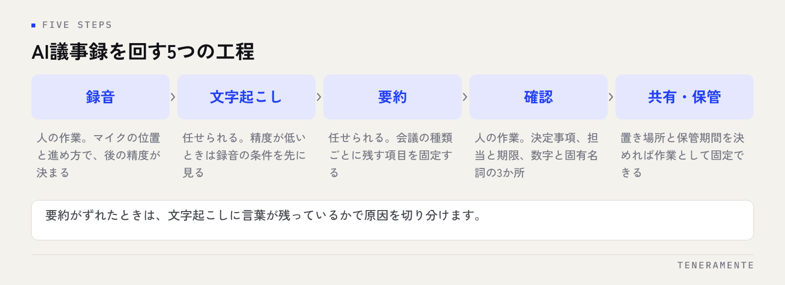

会議が終わったあと、録音を聞き直しながら議事録を整える。この作業に、会議そのものと同じくらいの時間がかかっている職場は少なくありません。AIで議事録を自動化するときに効くのは、文字起こしの精度を上げることよりも、録音から共有までを工程に分けて、人が手を入れる場所を絞ることです。
📌 この記事の結論
AI議事録は「録音 → 文字起こし → 要約 → 確認 → 共有」の5工程に分かれます。自動化できるのは文字起こしと要約までで、決定事項・担当・期限の確認は人が残します。最初に整えるのは録音の取り方です。ここが崩れると、後ろの工程はどれだけ良いツールを使っても精度が上がりません。
01議事録の時間は、書く作業ではなく聞き直す作業に消えている
議事録に時間がかかる会議には、だいたい共通した事情があります。会議中はメモを取りきれず、終わってから録音を頭から聞き直す。聞き直しながら、どの発言が決定でどれが雑談だったかを判断していく。
つまり、時間を使っているのは文章を書く作業ではなく、音声を順番にたどり直して、必要な部分を探す作業です。ここは人の判断力がほとんど要らない一方で、所要時間だけは会議の長さに比例します。
自動化の効き目が大きいのはこの部分です。逆に、決定事項が合っているかの確認や、担当者の割り振りが現実的かの判断は、聞き直しを代わってもらっても短くなりません。先に分けて考えると、どこに手を付けるべきかがはっきりします。生成AIを業務のどこから使うかという全体の考え方は中小企業のChatGPT業務活用ガイドにまとめています。
02自動化の全体像は、5つの工程に分かれる
議事録づくりを工程に分けると、次の並びになります。この順番で見ると、どこまで任せられてどこから人の作業かが決まります。

録音する。音声を文字に変換する（文字起こし）。文字起こしから必要な項目だけを抜き出す（要約）。抜き出した内容が合っているかを確かめる（確認）。決まった場所に置いて関係者に渡す（共有・保管）。
この5つのうち、2つめと3つめは任せられますが、1つめと4つめは人の仕事として残ります。1つめは機材と座席の問題、4つめは責任の問題だからです。5つめは保管場所を決めてしまえば、あとは作業として固定できます。
よくあるつまずきは、3つめの要約だけをAIに任せて、1つめの録音を今まで通りにしてしまうことです。聞き取れていない音声からは、聞き取れていない要約しか出てきません。
03録音の取り方で、あとの工程の精度が決まる
文字起こしの精度は、ツールの違いよりも録音の条件で大きく変わります。整えるのは次の点です。
- マイクを発言者の近くに置く（会議室の端に1台だけ置かない）
- オンライン会議は、各自が自分の端末の音声で参加する
- 会議の冒頭で参加者が名前を言う（話者の区別がつきやすくなる）
- 資料の数字や固有名詞は、口頭だけで済ませず画面か紙で共有する
- 同時に複数人が話す場面では、司会が一度整理して言い直す
3つめと5つめは、機材ではなく進め方の工夫です。費用はかかりませんが、文字起こしの読みやすさには大きく影響します。
録音していることは必ず伝える
社内会議でも、録音して文字起こしに使うことは冒頭で伝えてください。社外の方が参加する会議では、事前の了解を取ってから録音します。後から「あの発言が残っているのか」という話になると、議事録の自動化そのものが止まります。
04文字起こしと要約は、別の工程として考える
文字起こしと要約を1つの作業として扱うと、うまくいかなかったときに原因が分かりません。分けておくと、確かめる場所が決まります。
要約がずれているときに疑うのは2つです。文字起こしの段階で発言が取れていないのか、文字起こしは取れているが抜き出す指示が合っていないのか。前者なら録音の条件を、後者なら指示の書き方を直します。
要約の質が低いと感じたとき、実際には文字起こしの段階で言葉が落ちていることが多くあります。原因を取り違えると、ツールを変えても結果は変わりません。
確かめ方は単純です。文字起こしのテキストを開いて、問題になった箇所がそもそも文字として残っているかを見る。残っていれば指示の問題、残っていなければ録音の問題です。この切り分けだけで、見直す場所を間違えなくなります。
05要約の指示は、会議の種類ごとに決めておく
毎回「要約してください」と頼むと、出てくる形が毎回変わります。比較も検索もできない議事録が増えるだけなので、会議の種類ごとに、残す項目を先に決めて指示文を固定します。
| 会議の種類 | 要約で残す項目 | 残さない項目 |
|---|---|---|
| 定例の進捗会議 | 進捗、遅れている作業、次回までの担当と期限 | 経緯の説明、雑談 |
| 顧客との打ち合わせ | 要望、決定事項、持ち帰り事項、次回の日程 | 社内の内輪の話 |
| 社内の検討会議 | 論点、出た案、採用した案と理由、保留事項 | 発言者ごとの逐語 |
| 役員・経営会議 | 決議事項、数字の報告、次の確認時期 | 議論の途中経過 |
| トラブル対応の会議 | 事実の経過、原因、対応と担当、再発防止 | 評価や責任の言及 |
指示文は、この「残す項目」をそのまま並べる形で書きます。項目名を指定し、該当する内容がなければ「該当なし」と書かせる。この2点を入れておくと、毎回同じ形で返ってきます。
指示文の書き方そのものに慣れていない場合は、先に項目名だけを決めて、文章は短く始めてかまいません。使いながら足りない項目を追加していくほうが、最初から作り込むより続きます。
06人が確認するのは、3か所だけ
出てきた要約を頭から読み直していると、結局時間が元に戻ります。確認するのは次の3か所に絞ります。
1つめは決定事項です。決まったことと、決まらずに保留になったことが入れ替わっていないかを見ます。ここは会議の結論そのものなので、間違えると議事録が実害を出します。
2つめは担当と期限です。「検討します」という発言が特定の担当者の宿題として書かれていないか、期限が付いていない作業が残っていないかを確かめます。
3つめは数字と固有名詞です。金額、日付、会社名、商品名は、音声から文字に変える段階でずれやすい部分です。資料がある会議なら、資料と突き合わせれば済みます。
全文の読み直しを前提にすると続かない
確認作業を「全部読んで直す」形にすると、自動化前と同じ時間がかかります。3か所だけを見る前提にするには、要約の指示文でその3か所を必ず項目として立てさせておくことが条件です。項目が立っていない要約は、どこを見ればよいかが分かりません。
07社内で回す前に決めておくこと
試しに使う段階では問題になりませんが、全社で回す前に決めておく点があります。
まず、会議の音声と文字起こしをどこに置くかです。録音データ、文字起こし、完成した議事録の3つが別の場所に散らばると、後から探せません。保管先と保管期間を先に決めてください。
次に、外部のサービスに入れてよい会議と、入れてはいけない会議の線引きです。人事の評価、未公表の取引、個人情報を扱う会議は、同じ扱いにできません。社内ルールとして書き出す項目は生成AIの社内ルールをテンプレートで作るで整理しています。
最後に、議事録の責任者です。自動で出てきた文章であっても、社内に残る記録としての責任は人が持ちます。会議ごとに確認する人を決めておけば、出てきたものがそのまま回る事故を防げます。導入が止まる要因は仕組みより運用側に出やすく、その型はAI導入が失敗する7つのパターンにまとめました。
文字起こしの精度が低いときは、ツールを変えるべきですか？
議事録の要約は、どこまで細かく書かせるべきですか？
会議の録音を外部のAIサービスに入れても問題ありませんか？
08まとめ：1つの定例会議から始める
AIによる議事録の自動化は、録音・文字起こし・要約・確認・共有の5工程に分けて、録音の条件を整え、要約の指示を会議の種類ごとに固定し、確認を3か所に絞る——この形で回ります。全社の会議を一度に対象にする必要はありません。
まずは参加者も形式も決まっている定例会議を1つ選び、そこで指示文と保管場所を固めてください。形が決まった会議から広げていくほうが、途中で止まりません。
TENERAMENTEなら、会議の種類ごとに残す項目を決めて指示文を作り込むところから、録音データと議事録の保管先、入れてよい会議の線引きまでを、御社の会議の実情に合わせて設計してお渡しします。会議のあとに録音を聞き直す時間がなくなり、確認は決定事項と担当・期限を見るだけの短い作業になります。AI業務改善の進め方をご覧いただいたうえで、お問い合わせからお気軽にご相談ください。